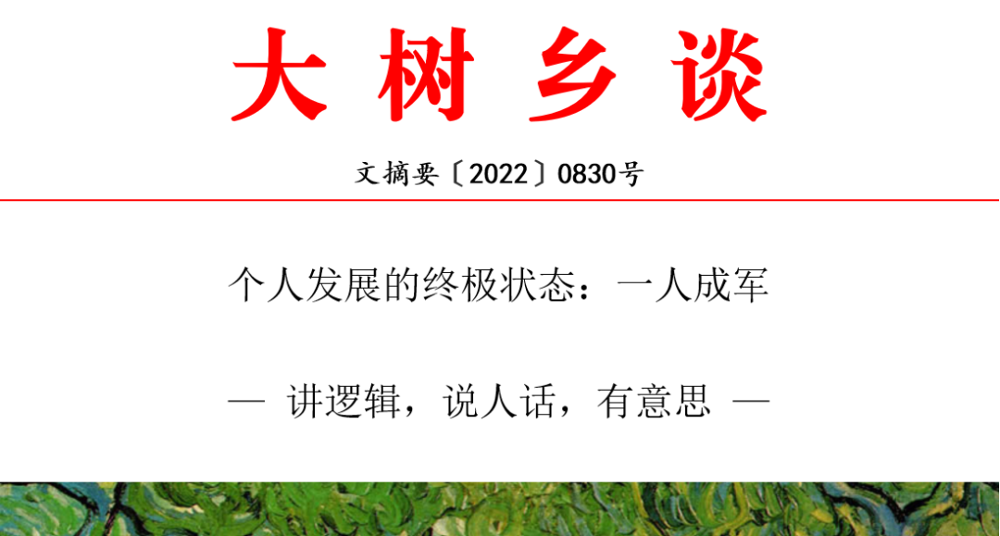

打破牢笼，找到属于自己的职业未来

中国有句古话叫“难得糊涂”，意思是凡事不必过于计较，但这话并不对，因为糊涂一点不难，难的是知道什么时候应该糊涂、什么时候应该清醒。但现实中，很多人在应该清醒的却从未清醒过，糊里糊涂度过一生，甚至还把下一代带进了歪路。既因为思维惯性，也因为时代变化太快。显而易见，我们正处于一个新时代的开端，新技术、新经济、新文化带来了新的社会结构、新的社会秩序，但很多人还停留在过去，用过去的认知、方法解决未来的新问题，这又怎么可能成功呢？
这一篇是个人发展成长的第三篇，接续《人生前35年的个人发展方法论》《全球凛冬将至，我们个人该如何做好应对？》，同样是总结小镇和周围一些朋友的经验教训基础上完成的，小镇也在按这篇的思路规划自己的职业发展，也曾用来帮助在职业发展上陷入困境的人，效果很好，今天就来分享下。本篇的核心在于如何破除过去时代的经验束缚，面向未来，重新思考职业到底是什么，个人又该如何顺应时代变化规划好自己的职业发展，又能采取什么有效办法提升自己。
- 1 -
一夜之间，理想的工作怎么就没了？在写这篇前，小镇做了一次比较大范围的调研，包括招聘平台、不同体型的公司以及不同行业、不同年龄、不同地区的工作者、求职者，也包括长期从事就业领域的专家学者。发现了一些新的变化，有的是受到新冠疫情、国际矛盾等中短期冲击的影响，但有的却是长期性、趋势性的。核心结论是： 传统白领职业体系正在瓦解，新的职业体系正在建立，职业变革比预期的来得更快。